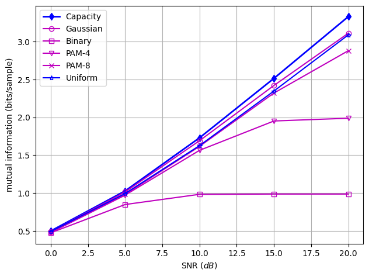
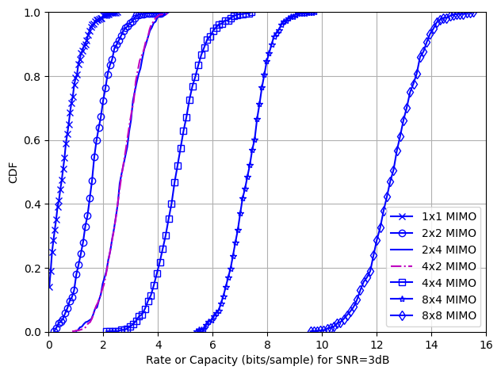

12.8.1 Computer Exercise 12.1: Huffman Code#
The first program implements a Huffman encoder function. The user need only supply a probability vector that consists of all the source symbol probabilities. The probability entries do not need to be ordered.
*Note: Refer to textbook for additional information. *
import numpy as np
import matplotlib.pyplot as plt
# Python function huffmancode defined here
def huffmancode(p):
# input p is a probability vector of p(x_i) of source symbols x_i
pord = np.argsort(p)
psort = p[pord]
n = len(p); q = p.copy()
m = [None] * (n - 1)
for i in range(n - 1):
l = np.argsort(q)
q = q[l]
m[i] = np.concatenate((l[:n-i], [-1] * i))
q = np.concatenate(([q[0] + q[1]], q[2:], [1]))
m = np.array(m)
Cword = [''] * (n-1) + ['0'] + [''] * (n-1) + ['1']
for i1 in range(n - 2):
Ctemp = Cword.copy()
idx0 = (np.where(m[(n-1) - (i1+1),:]==0)[0][0]+1) * n
Cword[:n] = Ctemp[idx0 - n + 1:idx0] + ['0']
Cword[n:2 * n - 1] = Cword[:n - 1] + ['1']
for i2 in range(2, i1 + 3):
idx2 = np.where(m[(n-1) - (i1+1),:]==i2-1)[0][0]+1
Cword[i2 * n:(i2 + 1) * n] = Ctemp[n * (idx2 - 1):n * idx2]
huffcode = [[''] * n for _ in range(n)]
for i in range(n):
idx1 = np.where(m[0,:]==i)[0][0]+1
huffcode[i] = ''.join(Cword[n * (idx1 - 1):idx1 * n])
return huffcode, n
# This exercise requires the input of a probability vector p that list all the
# probabilities of each source input symbol
p = np.array([0.2, 0.05, 0.03, 0.1, 0.3, 0.02, 0.22, 0.08]) #symbol probabilities
huffcode, n = huffmancode(p) # Encode Huffman code
entropy = -np.sum(np.log2(p) * p) # Find entropy of the source
# Display the results of Huffman encoder
print('symbol -->\tcodeword\tProbability')
codeword_lengths = np.zeros(n, dtype=int)
for i in range(n):
codeword = huffcode[i]
codeword_lengths[i] = len(codeword)
print(f'x{i+1}\t-->\t{codeword}\t\t{p[i]}')
print(f'Codeword lengths: {codeword_lengths}')
avg_length = np.dot(codeword_lengths, p)
print(f'Entropy = {entropy:.4f}')
print(f'Average codeword length = {avg_length:.4f}')
symbol --> codeword Probability
x1 --> 00 0.2
x2 --> 10111 0.05
x3 --> 101101 0.03
x4 --> 100 0.1
x5 --> 11 0.3
x6 --> 101100 0.02
x7 --> 01 0.22
x8 --> 1010 0.08
Codeword lengths: [2 5 6 3 2 6 2 4]
Entropy = 2.5705
Average codeword length = 2.6100
12.8.2 Computer Exercise 12.2: Channel Capacity and Mutual Information#
Note: Note: Refer to textbook for additional information.
def mutualinfo(x, y):
'''Computes the mutual information of two vectors x and y in bits
Args:
x, y: the 1-D vectors to be analyzed.
Returns:
muinfo_bit: mutual information.'''
minx = np.min(x); maxx = np.max(x)
deltax = (maxx - minx) / (len(x) - 1)
lowerx = minx - deltax / 2; upperx = maxx + deltax / 2
ncellx = np.ceil(len(x) ** (1/3))
miny = np.min(y); maxy = np.max(y)
deltay = (maxy - miny) / (len(y) - 1)
lowery = miny - deltay / 2; uppery = maxy + deltay / 2
ncelly = ncellx
rout = np.zeros((int(ncellx), int(ncelly)))
xx = np.round(((x - lowerx) / (upperx - lowerx)) * ncellx + 1 / 2)
yy = np.round(((y - lowery) / (uppery - lowery)) * ncelly + 1 / 2)
for n in range(len(x)):
indexx = int(xx[n])
indexy = int(yy[n])
if 1 <= indexx <= ncellx and 1 <= indexy <= ncelly:
rout[indexx - 1, indexy - 1] += 1
h = rout
estimate = 0; sigma = 0; count = 0 # initialize to 0 before updating
hy = np.sum(h, axis=0); hx = np.sum(h, axis=1) # Define row and column sums
for nx in range(int(ncellx)):
for ny in range(int(ncelly)):
if h[nx, ny] != 0:
logf = np.log(h[nx, ny] / hx[nx] / hy[ny])
else:
logf = 0
count += h[nx, ny]
estimate += h[nx, ny] * logf
sigma += h[nx, ny] * logf ** 2
# Biased estimate
estimate /= count
sigma = np.sqrt((sigma / count - estimate ** 2) / (count - 1))
estimate += np.log(count)
nbias = (ncellx - 1) * (ncelly - 1) / (2 * count)
muinfo_bit = (estimate - nbias) / np.log(2) # Remove bias
return muinfo_bit
Channel_gain = 1 # User defined scalar channel gain
H = Channel_gain # AWGN Channel gain
SNRdb = np.arange(0, 25, 5) # SNR in dB
L = 200000
SNR = 10 ** (SNRdb / 10) # Compute the analytical channel capacity
Capacity = 1 / 2 * np.log2(1 + H * SNR)
# Estimate mutual information between input and output signals for AWGN channels
muinfovec = np.zeros((len(SNRdb), 5))
for kk in range(len(SNRdb)):
noise = np.random.randn(L) / np.sqrt(SNR[kk])
x = np.random.randn(L)
x1 = np.sign(x)
x2 = (np.floor(np.random.rand(L) * 4 - 4e-10) * 2 - 3) / np.sqrt(5)
x3 = (np.floor(np.random.rand(L) * 8 - 4e-10) * 2 - 7) / np.sqrt(21)
x4 = (np.random.rand(L) - 0.5) * np.sqrt(12)
muinfovec[kk, 0] = mutualinfo(x, x + noise) # Gaussian input
muinfovec[kk, 1] = mutualinfo(x1, x1 + noise) # Binary input (-1,+1)
muinfovec[kk, 2] = mutualinfo(x2, x2 + noise) # 4-PAM input (-3,-1,1,3)
muinfovec[kk, 3] = mutualinfo(x3, x3 + noise) # 8-PAM (-7,-5,-3,-1,1,3,5,7)
muinfovec[kk, 4] = mutualinfo(x4, x4 + noise) # Uniform input(-0.5,0.5)
# plot capacity and mutual information
plt.plot(SNRdb,Capacity, 'b-d', label='Capacity',linewidth=2)
plt.plot(SNRdb,muinfovec[:,0],'m-o', label='Gaussian',mfc='none')
plt.plot(SNRdb,muinfovec[:,1],'m-s', label='Binary',mfc='none')
plt.plot(SNRdb,muinfovec[:,2],'m-v', label='PAM-4',mfc='none')
plt.plot(SNRdb,muinfovec[:,3],'m-x', label='PAM-8',mfc='none')
plt.plot(SNRdb,muinfovec[:,4],'b-*', label='Uniform',mfc='none')
plt.xlabel(r'SNR $(dB)$'); plt.ylabel('mutual information (bits/sample)')
plt.legend(loc='upper left'); plt.grid()
plt.tight_layout(pad=1.0); plt.show()


12.8.3 Computer Exercise 12.3: MIMO Channel Capacity#
Note: Refer to textbook for additional information.
# This program calculates capacity of random MIMO (mxn) channels and plots the
# cumulative distribution (CDF) of the resulting capacity;
K = 500 # Number of random channels: K=200;
SNRdb = 3 # Signal to noise ratio: SNRdb=3dB
SNR = 10 ** (SNRdb / 10) # convert SNRdb to real numeral
m = 1; n = 1; cap11 = np.zeros(K) # 1x1 channels
for kk in range(K):
H = np.random.randn(m, n) # Random MIMO Channel
cap11[kk] = np.log(np.linalg.det(np.eye(n) + SNR * H.T @ H))/(2 * np.log(2))
[N11, C11]= np.histogram(cap11,bins=K // 10, density=False) #CDF: MIMO capacity
C11 = C11[:-1] + np.diff(C11)/2
m = 2; n = 2; cap22 = np.zeros(K) # 2x2 channels
for kk in range(K):
H = np.random.randn(m, n) # Random MIMO Channel
cap22[kk] = np.log(np.linalg.det(np.eye(n) + SNR * H.T @ H))/(2 * np.log(2))
[N22, C22] = np.histogram(cap22,bins=K // 10, density=False) #CDF: MIMO capacity
C22 = C22[:-1] + np.diff(C22)/2
m = 4; n = 2; cap42 = np.zeros(K) # 4x2 channels
for kk in range(K):
H = np.random.randn(m, n) # Random MIMO Channel
cap42[kk] = np.log(np.linalg.det(np.eye(n) + SNR * H.T @ H))/(2 * np.log(2))
[N42, C42] = np.histogram(cap42,bins=K // 10, density=False) #CDF: MIMO capacity
C42 = C42[:-1] + np.diff(C42)/2
m = 2; n = 4; cap24 = np.zeros(K) # 2x4 channels
for kk in range(K):
H = np.random.randn(m, n) # Random MIMO Channel
cap24[kk] = np.log(np.linalg.det(np.eye(n) + SNR * H.T @ H))/(2 * np.log(2))
[N24, C24] = np.histogram(cap24,bins=K // 10, density=False) #CDF: MIMO capacity
C24 = C24[:-1] + np.diff(C24)/2
m = 4; n = 4; cap44 = np.zeros(K) # 4x4 channels
for kk in range(K):
H = np.random.randn(m, n) # Random MIMO Channel
cap44[kk] = np.log(np.linalg.det(np.eye(n) + SNR * H.T @ H))/(2 * np.log(2))
[N44, C44] = np.histogram(cap44,bins=K // 10, density=False) #CDF: MIMO capacity
C44 = C44[:-1] + np.diff(C44)/2
m = 8; n = 4; cap84 = np.zeros(K) # 8x4 channels
for kk in range(K):
H = np.random.randn(m, n) # Random MIMO Channel
cap84[kk] = np.log(np.linalg.det(np.eye(n) + SNR * H.T @ H))/(2 * np.log(2))
[N84, C84] = np.histogram(cap84,bins=K // 10, density=False) #CDF: MIMO capacity
C84 = C84[:-1] + np.diff(C84)/2
m = 8; n = 8; cap88 = np.zeros(K) # 8x8 channels
for kk in range(K):
H = np.random.randn(m, n) # Random MIMO Channel
cap88[kk] = np.log(np.linalg.det(np.eye(n) + SNR * H.T @ H))/(2 * np.log(2))
[N88, C88] = np.histogram(cap88,bins=K // 10, density=False) #CDF: MIMO capacity
C88 = C88[:-1] + np.diff(C88)/2
print(C88, )
print(N88)
np.cumsum(N88)/K
[ 9.57385865 9.69531965 9.81678064 9.93824164 10.05970263 10.18116363
10.30262462 10.42408562 10.54554661 10.66700761 10.7884686 10.9099296
11.03139059 11.15285159 11.27431258 11.39577358 11.51723457 11.63869557
11.76015656 11.88161756 12.00307855 12.12453954 12.24600054 12.36746153
12.48892253 12.61038352 12.73184452 12.85330551 12.97476651 13.0962275
13.2176885 13.33914949 13.46061049 13.58207148 13.70353248 13.82499347
13.94645447 14.06791546 14.18937646 14.31083745 14.43229845 14.55375944
14.67522043 14.79668143 14.91814242 15.03960342 15.16106441 15.28252541
15.4039864 15.5254474 ]
[ 1 0 0 1 0 3 1 2 5 2 5 6 6 7 11 15 13 7 10 25 24 19 26 22
24 18 30 23 25 20 24 13 16 26 8 15 13 8 10 4 3 0 3 2 1 0 0 2
0 1]
array([0.002, 0.002, 0.002, 0.004, 0.004, 0.01 , 0.012, 0.016, 0.026,
0.03 , 0.04 , 0.052, 0.064, 0.078, 0.1 , 0.13 , 0.156, 0.17 ,
0.19 , 0.24 , 0.288, 0.326, 0.378, 0.422, 0.47 , 0.506, 0.566,
0.612, 0.662, 0.702, 0.75 , 0.776, 0.808, 0.86 , 0.876, 0.906,
0.932, 0.948, 0.968, 0.976, 0.982, 0.982, 0.988, 0.992, 0.994,
0.994, 0.994, 0.998, 0.998, 1. ])
# Now ready to plot the CDF of the capacity distribution
plt.plot(C11,np.cumsum(N11)/K,'b-x',label='1x1 MIMO',mfc='none')
plt.plot(C22,np.cumsum(N22)/K,'b-o',label='2x2 MIMO',mfc='none')
plt.plot(C24,np.cumsum(N24)/K,'b-',label='2x4 MIMO',mfc='none')
plt.plot(C42,np.cumsum(N42)/K,'m-.',label='4x2 MIMO',mfc='none')
plt.plot(C44,np.cumsum(N44)/K,'b-s',label='4x4 MIMO',mfc='none')
plt.plot(C84,np.cumsum(N84)/K,'b-*',label='8x4 MIMO',mfc='none')
plt.plot(C88,np.cumsum(N88)/K,'b-d',label='8x8 MIMO',mfc='none')
plt.legend(loc='lower right'); plt.grid(); plt.ylim([0,1]); plt.xlim([0,16])
plt.xlabel('Rate or Capacity (bits/sample) for SNR=3dB'); plt.ylabel('CDF')
plt.tight_layout(pad=1.0); plt.show()
